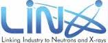

The purpose of the LINX project is to create an ecosystem that ensures that Danish companies can utilize advanced X-ray and neutron technologies to the fullest - especially as the MAX IV, ESS, and European XFEL are coming online in the near future. The project is a collaboration between three major Danish universities - The Technical University of Denmark (DTU), University of Aarhus (AU), and University of Copenhagen (UCPH) - and a number of industry partners (e.g Novo Nordisk and Grundfos). The project is coordinated through DI - Dansk Industri (the association for Danish industry), and funded by the Danish Innovation Foundation. The LINX projects are all centred around 6 focus areas, which have been chosen on the basis of concrete materials problems for the industries. The initial projects cover research in material science in the topics of: - Colloid materials - Drug discovery, protein based pharmaceuticals and protein engineering - Sorption of liquids and humidity - Fiber structure and dynamics - Materials at operating and processing conditions - Quality assurance For more info see the LINX website.